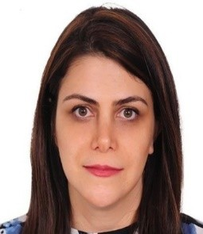

Overview
Massive PE penetration (PV, wind, batteries, HVDC, STATCOMs) can cause resonance and harmonic interactions that local mitigation cannot fully prevent. HARMONY develops a comprehensive, user-friendly open-source tool to simulate hybrid power system components for stability assessment much faster than commercial EMT workflows.
Project description
HARMONY (“HARMONic stabilitY assessment of PE-penetrated power systems”) builds models for hybrid power systems and dynamic-phasor components (WP1), optimisation models for harmonic and DP analysis of AC–DC systems (WP2), and implements/tests the mathematical framework (WP3).
Milestones include experimental validation of spectral and DP converter models in the RTDS laboratory, interconnection of spectral/DP/power-flow models, and full-framework experimental validation. By-products include the ACDC-OpFlow toolbox and DQsym dynamic-phasor library, feeding the C++ Harmony framework.
Objectives & deliverables
- WP1: HPS and dynamic-phasor component models
- WP2: Optimisation models for harmonic and DP analysis of AC–DC systems
- WP3: Framework implementation, RTDS testing and open-source release
- Deliverables include AC/DC OPF toolbox, DQsym, Harmony code/docs, and peer-reviewed publications
Partners
Common CRESYM project by TU Delft, TenneT and Swissgrid.
TU Delft role
Aleksandra Lekić is PI. TU Delft leads mathematical framework design, component spectral models, harmonic stability solver, toolbox architecture and funding acquisition, with PhD/postdoc contributions on OPF, DQsym and software.
Related portfolio
Team on this project

Saif Alsarayreh
PhD researcher

Dr. Haixiao Li
Postdoctoral researcher

Dr. Dipl.-Ing. Aleksandra Lekić
Associate Professor · Group lead
Dr. Robert Dimitrovski
Postdoctoral researcher · TenneT / TU Delft

Dr. Azadeh Kermansaravi
Postdoctoral researcher (alumni)
Dr. Debottam Mukherjee
Postdoctoral researcher (alumni)
Dr. Dongyu Li
Postdoctoral researcher (alumni)
Dr. Sounak Nandi
Postdoctoral researcher (alumni)